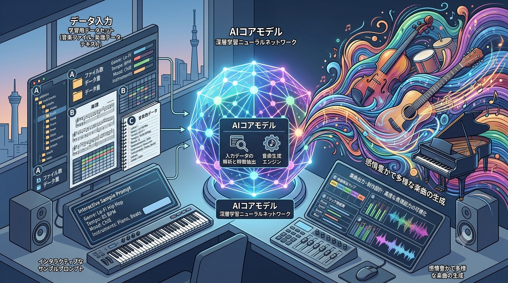
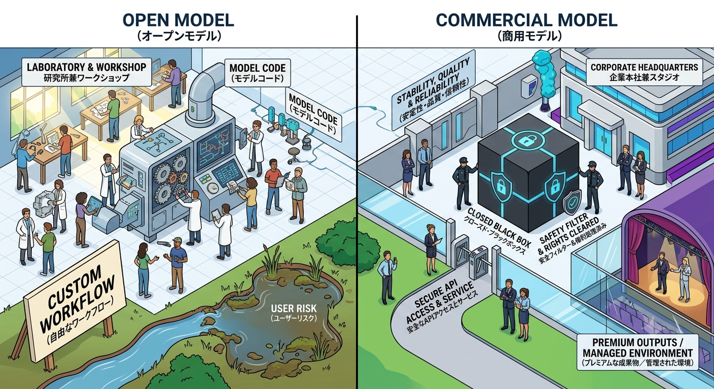
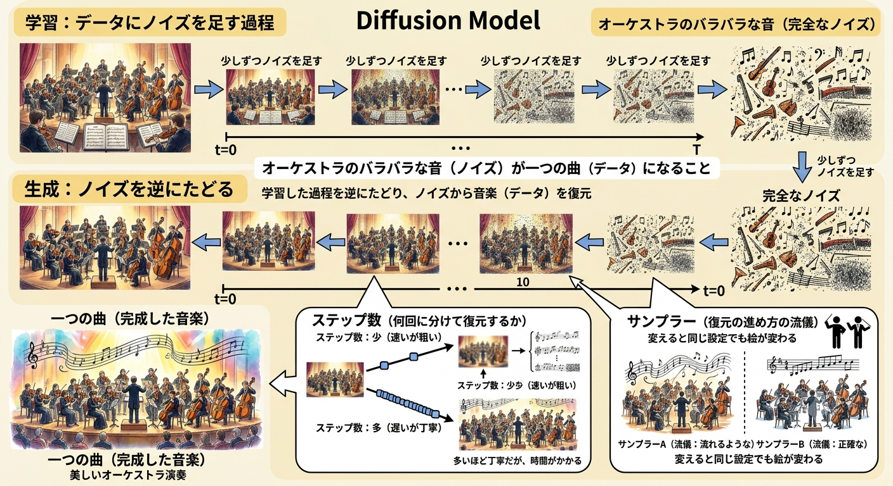

作品

音楽の歴史で学ぶ！生成AIの仕組み
生成AIの「膨大な過去データ（音楽の歴史）をもとに、文脈に沿った次の展開（音符）の確率を計算して出力している」という仕組みを、高校生へ直感的に伝えることを意識しました。 難解な数式やニューラルネットワークの理論をそのまま見せるのではなく、親しみやすいアニメ調のイラストと「古典音楽からデジタル音楽へ至る楽曲の流れ」「確率で選ばれる音符」「生成された曲を聴いて楽しむ姿」という構成を採用しています。AIをブラックボックスではなく「歴史を学んで新しいアイデアを提案する身近なパートナー」として捉え、探究心や創作意欲をかき立てることを意図しています。
使ったプロンプト
高校生向けに、音楽の歴史を通して生成AIの仕組みを解説するアニメ調の1枚のスライドを生成してください。クラシック、ジャズ、ロック、ボーカロイドといったジャンルのアイコンや楽譜を含む「音楽の歴史（学習データ）」のタイムラインが描かれ、日本の高校生がそれをデバイスに入力しています。中「AIの脳（ニューラルネットワーク）」が、次に続く音符を活発に予測・推論（推論処理）しています。AIの脳の周囲には、確率（例：「ポップスの音符 70%」「ジャズの音符 10%」など）が示された数千もの音符の選択肢が浮かんでおり、AIはその中から最も確率の高いものを選び出しています。右側では、AIから滑らかで新しいメロディの楽譜が流れ出し、別の高校生がそれをヘッドホンで聴きながら笑顔を浮かべています。視覚的に分かりやすいレイアウトで、緻密な描き込みがありつつも、親しみやすくインスピレーションをかき立てるような雰囲気の1枚のスライドです。
AI利用気を付けること
AI生成の商用利用について気を付けることが簡潔にわかるよう意識しました。
使ったプロンプト
音楽制作スタジオで、2人の若いプロデューサー（男性）がヘッドホンを着用して作業している様子が描かれています。彼らが向かうメインモニターには、DAW（デジタル・オーディオ・ワークステーション）の画面が表示されており、オーディオ波形と共に、AI作曲ツールである「SUNO AI」の文字と、データ圧縮を意味する「Data Reducer（データ削減）」のアイコンが確認できます。デスクの上には、浮かび上がるデータストリームや「compressed（圧縮済み）」と書かれた小さなドキュメントがあり、AIによるデータ処理やファイル削減が行われていることが示唆されています。

楽曲生成AI
楽曲生成AIが単なる道具ではなく、クリエイターの「論理的思考」と「芸術的感性」をつなぐ現代の創造的パートナーであることを表現しています。 左側のDTM機器（ピアノロールやミキサー）は、クリエイターの意志（プロンプト）を具体化する「論理的・データ的側面」を示し、中央のAIコアがこれらを処理します。そして右側では、無機質なデータがAIによってカラフルで感情豊かな音楽へと昇華され、創造性が広がっています。 AIによって技術的制約が取り払われ、人間の感性が無限の表現へと直感的に変換される、音楽創作の未来形を視覚化したものです。
使ったプロンプト
現代的なDAWスタジオ環境における音楽AI技術を表現した、ワイドなアイソメトリック・ベクターイラスト。左側には、ピアノロールのグリッド、ミキサーフェーダー、EQスペクトラム、そしてテキストプロンプト設定が記されたクリップボードを備えたDAW（デジタル・オーディオ・ワークステーション）のコントロールパネルが配置されています。中央では、発光するガラス製のニューラルネットワークAIコア・スフィア（球体）が制御データを取り込み、それを変換しています。右側では、そのデータが鮮やかなオーディオ波形、光り輝く音符、そして様式化された楽器（ピアノ、シンセサイザー、ドラム）からなる、色彩豊かでダイナミックな流体状の波へと弾け広がっています。クリーンなUI表現、ハイテクと芸術的創造性の融合、ミニマルなアイソメトリック・スタイル

オープンモデルと商用モデル
このプロンプトは、AIモデルの複雑な性質を、直感的に理解できる「空間」に落とし込むことで、一目で違いが伝わるように設計しました。 左側の「オープンモデル」は、壁のない工房です。機械の中身が見え、誰でも改造できる「自由さ」と「共同研究」を表現しています。同時に、その自由さが「ユーザーリスク（泥池）」と隣り合わせであることも示し、利点と注意点の双方を伝えています。 右側の「商用モデル」は、閉ざされたスタジオです。中身は見えない（ブラックボックス）代わりに、警備やフィルターで守られた「安定性」「安全性」を表現しています。企業利用における「信頼」と、洗練された「完成品」を受け取る場所であることを強調しています。
使ったプロンプト
「オープンモデルと商用モデルの違い」が一目で分かる1枚を作ってください。中央に境界線が引かれた、すっきりとした単一パネル構成の、鮮やかなイラストです。このイラストは、メタファーを用いて「オープンモデル」と「商用モデル」を対比させてください。左側、オープンモデル：活気あふれる共有型の「研究所兼ワークショップ」が描かれています。カジュアルな服装の人々が行き交う空間、彼らは協力しながら、「モデルコード」と記された、歯車や論理回路がむき出しのマシンを改造しています。人々はシンプルな道具を使い、独自の拡張パーツを製作したり実験を行ったりしています。手前には「自由なワークフロー」と書かれた看板があります。川が「ユーザーリスク」と記された、泥にまみれ草木が茂る池に流れ込んでおり、実験的な環境や安全策の欠如が強調されています。全体的な色調は、青、緑、そして温かみのあるアースカラーで構成されています。右側、商用モデル：洗練されたモダンな「企業本社兼スタジオ」が描かれています。清潔感があり、建物とプロフェッショナルな雰囲気のビジネススタッフが特徴です。警備チームが、「クローズド・ブラックボックス」と記された巨大で完全に密閉された黒い立方体を囲んでおり、そこには発光するセキュリティアイコンや「安全フィルター＆権利処理済み」のシンボルが表示されています。上部には「安定性・品質・信頼性」というバナーが掲げられています。「安全なAPIアクセスとサービス」と記されたゲート（ターンテーブル）によってアクセスが制限されています。手前の通路は滑らかに整備・管理されています。ガラス越しには劇場のようなステージが見え、そこには「プレミアムな成果物／管理された環境」という文字と共に、洗練された完成品が展示されています。全体的な色調は、シルバー、鮮やかな青、で構成されています。イラストは、明瞭さを意識してください

拡散モデルのオーケストラ
複雑なAI技術である「拡散モデル（Diffusion Model）」を、音楽のオーケストラ演奏に例えて、直感的に理解してもらうことを目的としています。 画像生成AIの「学習」と「生成」のプロセスを、オーケストラの演奏がバラバラな音（ノイズ）へと解体され、そしてそのノイズから再び一つの美しい楽曲へと再構築される流れに見立てて表現しました。 さらに、生成時の重要な設定である「ステップ数」と「サンプラー」の違いによって、楽曲（生成される画像）がどのように変化するかを視覚化し、その仕組みを分かりやすく伝えています。
使ったプロンプト
拡散モデルの仕組みをオーケストラになぞらえて解説する、インフォグラフィック風のイラスト。 上部に「学習：データにノイズを足す過程」を配置し、鮮明なオーケストラ演奏の画像が段階的にノイズに変わっていく様子を描写。各パネル上部に「少しずつノイズを足す」のテキスト、右端に「オーケストラのバラバラな音（完全なノイズ）」を配置。 下部に「生成：ノイズを逆にたどる」を配置し、右端のノイズから段階的にオーケストラと楽譜が復元されていく様子を描写。左端に「美しいオーケストラ演奏」と「一つの曲（完成した音楽）」を配置。 中央に大きな文字で「オーケストラのバラバラな音（ノイズ）が一つの曲（データ）になること」、その下に「学習した過程を逆にたどり、ノイズから音楽（データ）を復元」という解説テキスト。 下部左に「ステップ数（何回に分けて復元するか）」を配置し、「ステップ数：少（速いが粗い）」と「ステップ数：多（遅いが丁寧）」による結果の比較を描写。 下部右に「サンプラー（復元の進め方の流儀）」を配置し、2人の指揮者アイコンを起点に「サンプラーA（流儀：流れるような）」と「サンプラーB（流儀：正確な）」によるタッチの異なる結果の比較を描写。 全体をクリーム色の背景で、手書き風のビジュアルと日本語テキストで構成。

理想の全力肯定彼氏
マルチモーダルAI（LuC4）とHITLの仕組みを、表面の体験と裏面の処理に分けて可視化しました。 マルチモーダルAI（左・表面）：ユーザーが送るテキストや画像をビジョンモデル（CV）が読み取り、文脈を理解して親しみやすいケモノアバターから最適な応答を返します。 HITL（右・裏面）：生成結果に対し人間が評価・修正のフィードバックを与える仕組み。誤認識を防ぎ、応答の質を継続的に改善します。 単なる自動応答ではなく「視覚認識・生成・人間による評価ループ」で成り立つシステム全体を1枚の図解で表現しました
使ったプロンプト
すっきりと左右に分かれた背景上で、ユーザーインターフェースとバックエンドシステムを対比させた、分かりやすいコンセプトイラストです。 左側には、メッセージアプリを表示したスマートフォンの画面が描かれています。そこには、「全力肯定彼氏（LuC4）」という、擬人化されたオオカミの愛らしく親しみやすいキャラクターがアバターとして登場しています。チャット画面には、男性ユーザーに向けて「ずっと応援してるよ！」「よく頑張ったね！すごい！」といった、励ましの言葉が書かれた日本語の吹き出しが表示されています。 右側には、青い透明なボックス状の図の中に、バックエンドの処理プロセスが描かれています。ここでは、「マルチモーダルAIシステム」がユーザーの入力からテキスト分析やコンピュータビジョンによる画像認識を行っている様子が示されています。さらに、このシステムは「Human-in-the-Loop（HITL）」のワークステーションへと接続されており、そこでは人間のオペレーターがデスクでコンピュータに向かい、AIの応答を評価してフィードバックを行う様子が描かれています。